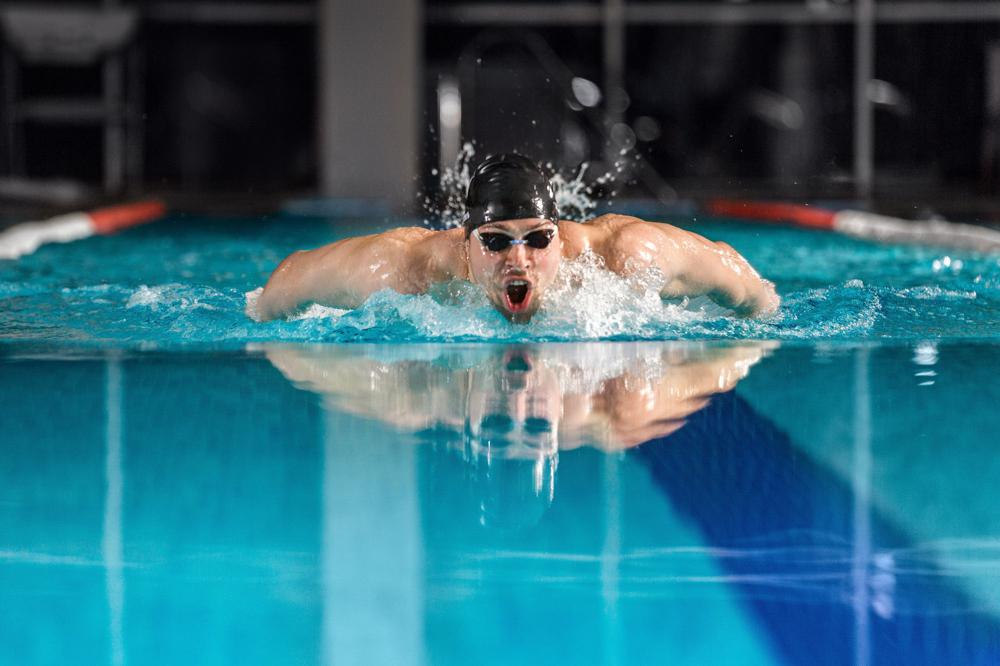
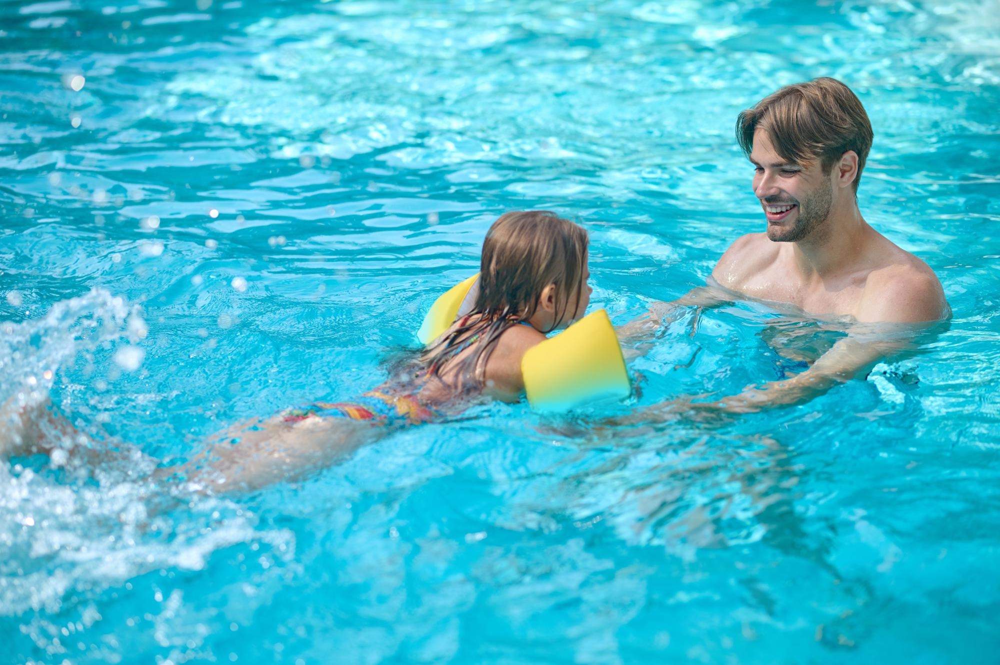

Crawlkurs
Hos oss är alla välkomna! Är du en motionssimmare som bara vill förbättra tekniken eller en nybörjare som bara vill lära dig grunderna? Eller är du kanske någon som tränar inför ett triathlon?
Simning som träning kan ses som underskattat men det finns många fördelar. Det är en skonsam träning för kroppen men samtidigt väldigt effektiv för muskler och kondition.
Anmäl dig här!

Babysim
Babysim är starten på ett livslångt vattenäventyr där barn och föräldrar tillsammans utforskar vattnets egenskaper och möjligheter. Tiden i vattnet sker alltid under barnets villkor, där vattenvana och vattensäkerhet är i fokus.
Låter det som något för dig och ditt barn? Anmäl er här!